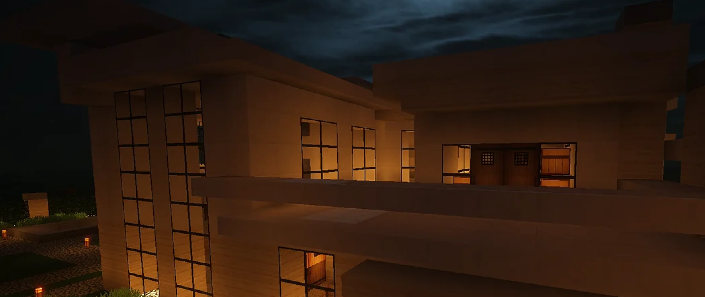
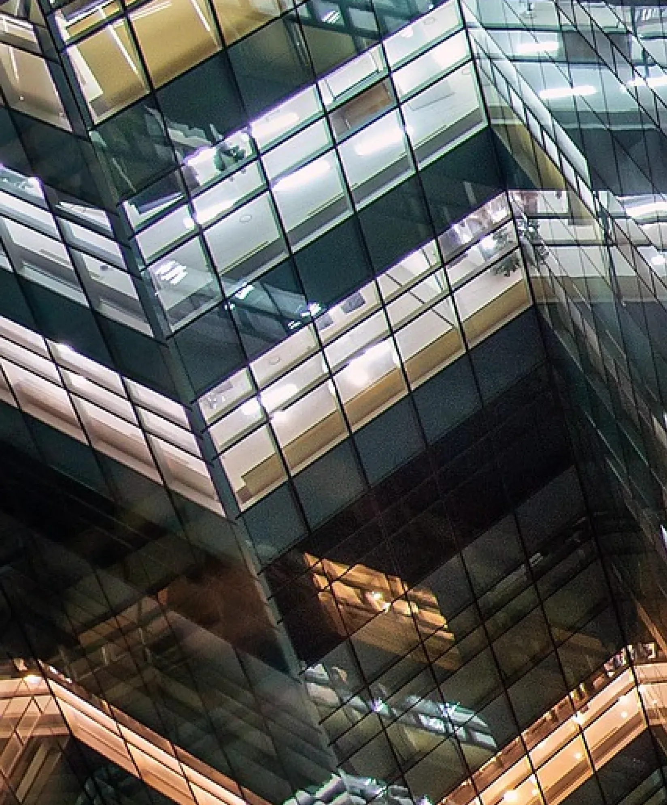

Portfolio
Etheric Residence
A private hillside villa rendered as a single, continuous story — restrained stone by day, lantern-lit by night.

Stone by day, lantern by night.
The brief called for a single hero image capable of carrying an entire funding presentation: a home that reads as both restrained and inevitable, its heavy stone volumes softened by the promise of the life inside them.
We built the villa in full 3D from architectural drawings, then spent the bulk of the schedule on light alone — dusk exteriors, interior glow bleeding through deep-set windows, and a sky moody enough to make the warmth read as deliberate, not accidental.

